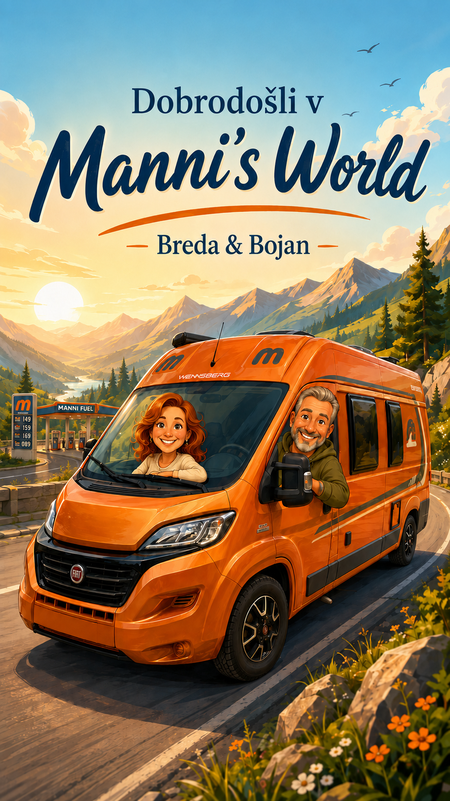

Dotakni se za preskok
🚐
Manni's World
⌁
⛽
⚙︎
↻
➤
Manni's World
Pot
✕
Začetek
📍 Moja trenutna lokacija
Cilj
Pot preko
Groba smer poti — ni nujno, da se tam ustaviš.
+ Dodaj
Pot še ni nastavljena.
Pot & doseg
Pot še ni preračunana.
Naslednja točka
—
Do naslednje
—
Preostala pot
—
Trenutno gorivo
—
Varen doseg
—
Od zadnje osvežitve
—
Sledeno od tankanja
—
Pametno tankanje
Priporočilo še ni izračunano.
Stroški poti
Ocena še ni izračunana.
—
predvidena razdalja
—
predviden strošek goriva
Predvidena poraba
—
Do zdaj plačano
—
Še do cilja
—
Strošek / 100 km
—
Dejanska poraba
—
Smart Fuel prihranek
—
Počisti
Shrani pot
Manni's World
Manni & tankanja
✕
🧭
Ture & arhiv
Aktivna tura, zaključene ture in testni podatki
›
Podatki o Manniju
Velikost rezervoarja
l
Povprečna poraba
l/100 km
Trenutno gorivo
l
Začetno stanje vneseš enkrat. Pozneje ga bo uporabljal modul dosega.
Števec kilometrov
km
Varnostna rezerva
10 l
Shrani podatke o Manniju
Novo tankanje
Vnesi dejanske podatke z računa.
Natočeno
l
Skupni znesek
€
Stanje kilometrov
km
Datum in ura
Po tankanju je rezervoar poln
To označi samo, ko je res poln. Tako lahko Manni med dvema polnima tankoma izračuna dejansko porabo tudi, če so bila vmes delna tankanja.
Shrani tankanje
Zgodovina
Počisti
Manni's World
Ture & arhiv
✕
Ime nove ture
Začni turo
Zaključi in arhiviraj
Izbriši trenutno/testno
Arhiv tur
Izbriši ves arhiv
Manni's World
Nastavitve
✕
Iskalni radij
5 km
10 km
20 km
30 km
50 km
Gorivo
Diesel B7
Manni API — Cloudflare Worker
Worker je že nastavljen kot privzeti vir, zato aplikacija deluje enako na telefonu in računalniku.
Shrani